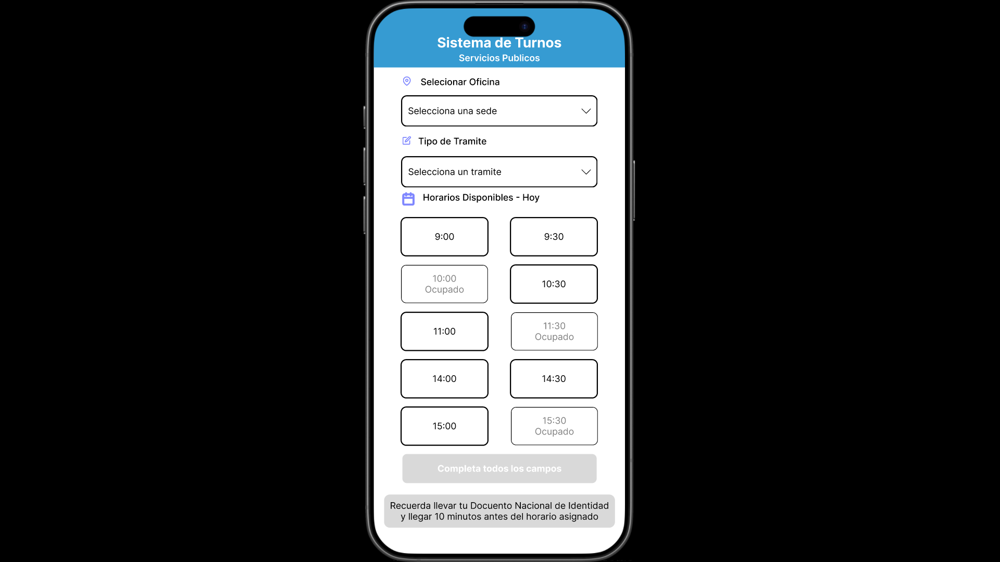
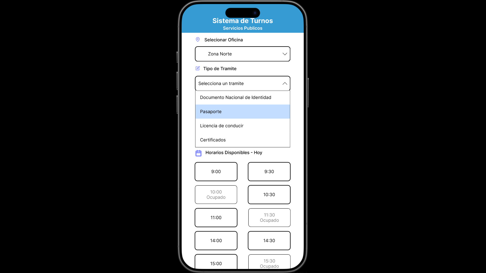
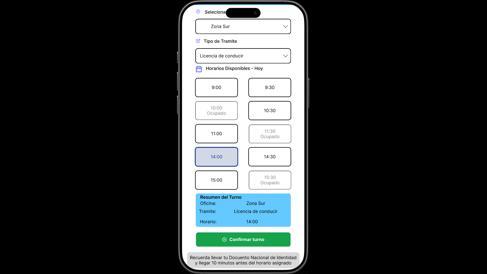

Scalable UI component system
Building consistency, reusable components, and clearer interface structure.
A design system case study focused on organizing UI elements through Atomic Design principles to improve consistency, reusability, and design efficiency.

Inconsistent UI patterns slowed down the design process
Without reusable components and shared rules, interfaces can become inconsistent across screens. This makes it harder to scale a product, document behavior, and collaborate with technical teams.
Designing guided user interactions through progressive states
The interface was designed to guide users step by step while booking an appointment. Each screen introduces a clearer level of interaction, helping users understand available options, confirm selections, and reduce uncertainty during the process.

Initial selection
Users begin by selecting the office location and opening the procedure selection menu before choosing an available schedule.

Dropdown interaction
Expanded dropdown states help users visualize available procedures without leaving the current screen or losing context.

Confirmation state
Once the appointment is selected, the interface summarizes the booking details before the final confirmation action.
Organizing components from simple to complex
I used Atomic Design principles to organize the system from foundational elements into larger reusable interface patterns.
- Atoms: colors, typography, icons, buttons, inputs.
- Molecules: cards, form groups, input combinations.
- Organisms: reusable UI sections and screen-level patterns.
Reusable components with clear states
Default
The base state communicates the normal appearance and expected behavior of each component.
Hover
Interactive feedback helps users understand when an element is clickable or ready for action.
Disabled
Disabled states prevent confusion by communicating when an action is not currently available.
Build faster without losing consistency
- Create reusable components instead of redesigning patterns from scratch.
- Document component behavior to improve collaboration with developers.
- Use consistent spacing, typography, and states across interfaces.
- Make the system easier to expand as the product grows.
A stronger foundation for scalable interface design
The design system created a clearer structure for building consistent interfaces. It helped organize visual decisions, reduce repetitive work, and support a more scalable design workflow.
Interested in scalable, consistent product design?
I’m open to UX/UI opportunities focused on design systems, product design, usability, and clear digital experiences.